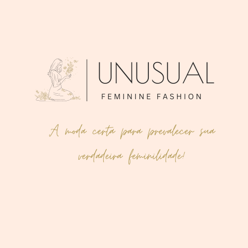

| 
O nome "Unsual" foi escolhido com cuidado para transmitir a essência da marca. Em vez de seguir as tendências convencionais da moda, a Unsual buscava desafiar o status quo, criando peças que fossem verdadeiramente incomuns e distintas. Para a equipe da Unsual, o termo "unsual" significava mais do que apenas roupas extravagantes; era sobre expressão individual, liberdade criativa e empoderamento feminino.
Cada coleção da Unsual contava uma história única, combinando elementos de arte, cultura e moda para criar peças que eram verdadeiramente únicas. Desde vestidos com cortes assimétricos até casacos com estampas surrealistas, a Unsual transformava a passarela em um espetáculo de criatividade e inovação.
À medida que a marca crescia, sua reputação de ser "unsual" se espalhava além das fronteiras francesas, conquistando seguidores em todo o mundo. As mulheres que vestiam Unsual não apenas usavam roupas, mas também faziam uma declaração audaciosa de sua individualidade e estilo.
Com o tempo, a Unsual se tornou uma força influente na indústria da moda, desafiando constantemente as normas e inspirando outras marcas a seguirem seu exemplo. E enquanto o mundo da moda continuava a evoluir, a Unsual permanecia fiel à sua missão de tornar o "unsual" uma parte essencial do guarda-roupa de cada mulher.
|